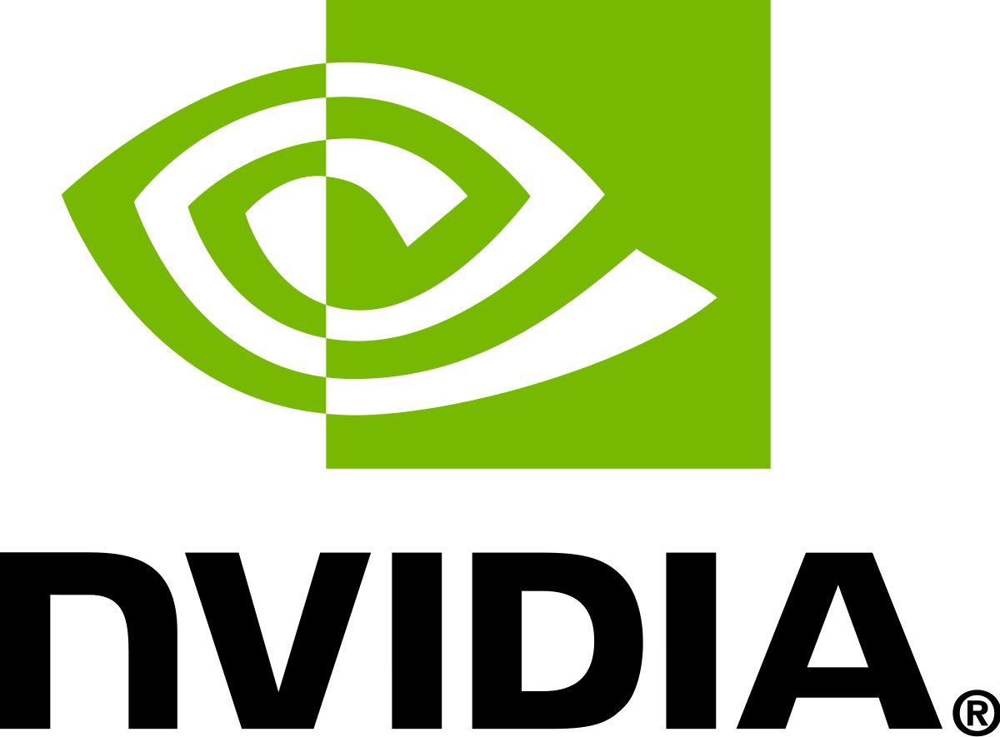
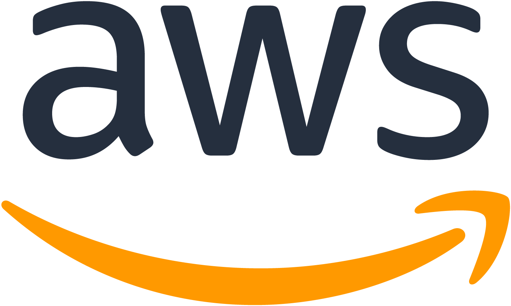

NVIDIA
2021-Present
I am currently employed as a Senior Software Engineer at NVIDIA. I work with Maxine and Broadcast products. For the algorithms and features in the products, I work on AI-based video-enhancement features such as webcam-denoising, artifact-reduction and, generative AI-based image animation such as eye-contact and live-portrait models.
I also focus on bringing these models to production using NVIDIA Cloud Functions (NVCF) and NVIDIA Inference Microservices (NIMs). In doing so, I have also built and release AI Foundation models, complete with Model Card++. NVCF endpoints are cloud-based inference endpoints that are supported by Triton Inference Servers.
I also focus on efficient enterprise-level ML platforms within NVIDIA, with a particular focus on MLops for computer vision teams. I worked with multiple-teams and architected cross-cutting infrastructure tools for data governance, management, visualization and preparation. I also built and migrated workloads for training and benchmarking of various computer vision models including architecting systems for logging, visualization, KPI tracking, continual training, hyper-parameter optimization artifact and configuration management etc.
For obvious reasons, some of the work that was performed while being employed by NVIDIA will not be made public here. Others that are already launched or made public are listed below.
Tenure Satistics:
- Patents filed: 2
-
{% include nvidia_work.html %}
Amazon
2017-2021
I was employed as an Applied Scientist at Amazon Alexa AI. My focus was on efficient enterprise-level ML platforms that powered Alexa’s model-training infrastructure, used by over 1500 scientists with hundreds of models trained everyday. I primarily focused on cost-efficient, and scalable distributed training environments. I worked both in engineering and research capacities. The problem spaces that I focused on were neural network compression via network architecture search and predictive early-stopping algorithms. Some of the work I have done in this team have been featured at EMNLP 2020.
Previously, I was an applied scientist at Amazon Web Services AI Labs. I was part of the AWS SageMaker launch team and was involved in the development of several AWS Sagemaker CV algorithms, with primary ownership stake in Object Detection and Semantic Segmentation algorithms. I also was a member of the launch team of Sagemaker RL. I owned and launched model compression using RL that became a significant part of the Keynote address at re:Invent 2019. I also worked on domain-adaptation algorithms for Sagemaker CV, which lead to both products and publications including an oral paper at CVPR 2019.
For obvious reasons, some of the work that was performed while being employed by Amazon will not be made public here. Others that are already launched or made public are listed here.
Tenure Satistics:
- Patents filed: 7
- Peer-reviewed publications: 2
- ArXiv papers/white papers: 1
- Books/Book Chapters: 2